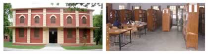
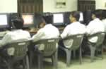
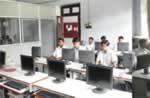
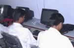

Library and Book-Bank

-
The Faculty Library has about 28000 book titles.
-
The Library subscribes to several National / International Journals.
-
The Library also provides access to INFLIBNET through an Institute–wide fiber optic LAN with access to more than 1000 e-journals.
-
Other facilities available in the library include reprographic and reference services.
-
The book-bank provides most of the text-books to the students in the Faculty.
-
In addition, about 2 lakh books are available in other faculty libraries, as well as the Central Library, to students of Faculty of Engineering.
Computing Labs
A number of state-of-the-art computer systems are available in the Faculty which are distributed in the following facilities and serve as a computing facility for U G, PG and Research students :
CAD Cell : Equipped with state-of-the-art Pentium 4 computer systems & software packages. Simulation Software packages include Siman / Cinema, Arena 9.0, SLAMSYSTEM, PC Model, CADMotion, PREACTOR, OptQuest etc.
Advanced Computing Lab (DST FIST Assisted): Equipped with state-of-the-art P 4 computer systems and software packages (such as FPGA Advantage, TANNER Tools, Multisim) for design & simulation of VLSI circuits.
Soft Computing Lab: The Faculty attained considerable depth in Soft Computing research. Several Ph.D. theses, M. Tech. dissertations, R & D Projects and International Journal publications bear testimony to this. The lab provides necessary infrastructure for these endeavors.
Image Processing Facility: Research on Content-based Image Recognition, and state-of-the-art facility for Video Acquisition and Processing towards content generation for Distance Education Programme of the Institute.
The other distributed Computing Facilities (outside of the Faculty Engineering) which are available to the students of the Faculty include:
- DEI Computer Centre
- Neural Network Lab
- Department of Mathematics Computer Lab
- Multi-Media Lab
- VLSI Lab
Special Learning Equipment
- Computer Maintenance Trainer
- TV Maintenance Trainer
- Electrical machines trainer
- Microprocessor Development System
- Microprocessor kits
- DSP kits with Code Composer Studio
- Analog and Digital Electronics Training kits
E-Classrooms
State-of-the-art e-classrooms have been set up in the faculty to offer quality technical education in distance mode.